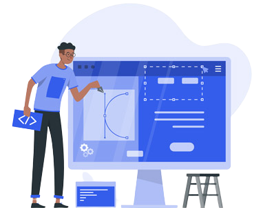
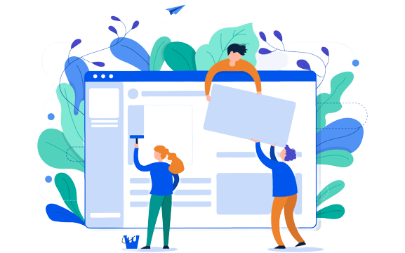

La définition du webdesign
Le webdesign, aussi appelé design graphique, consiste à mettre en forme les informations fournies par un site internet ou une application à travers un ensemble de contenus.
Ces contenus visuels comprenant du texte, de l’image et toutes autres formes d’animation permettent à l’utilisateur de recevoir l’information de façon claire pour une compréhension rapide.
Le webdesigner est donc chargé de concevoir et de réaliser le design d'une interface web : son métier ne se résume pas à la seule conception graphique car il s'attache avant tout à la formation des interactions des pages du site web.

Le webdesign a également pour objectif de renforcer l’ergonomie du site internet grâce au graphisme utilisé et l’optimisation de l’utilisation des différents outils présents sur les pages. L’utilisation des compétences “expérience utilisateur” devient alors un atout pour que les interactions graphiques amènent aux fonctions intuitives du site internet. L’utilisateur doit alors pouvoir naviguer de façon naturelle et fluide sur l’interface.
Le webdesign dans le commerce
Le webdesign, c’est aussi du marketing. Un site web est un outil de marketing primordial. Il peut représenter une marque, un produit et son fonctionnement. Vous pourriez vous demander quelle est la première utilité du design d’un site web… C’est d’attirer l’attention des visiteurs et de les convertir selon l’objectif de celui-ci. En une fraction de seconde, votre visiteur décide de rester ou pas. Votre design joue un rôle capital dans sa décision, même si celle-ci est inconsciente. Le design d’un site web doit dégager des mêmes émotions. Il doit donner confiance aux consommateurs d’en savoir plus sur l’entreprise ou la marque concernée. Il est nécessaire qu’il mette vos visiteurs directement à l’aise.
En conclusion
L’utilisation du webdesign est donc plus qu’un simple habillage graphique. C’est un outil indispensable qui permet de transmettre une information ou un message marketing de manière naturelle et claire, et d’améliorer l’expérience utilisateur. Pour la plupart des entreprises possédant un site internet, le webdesign est donc indispensable.